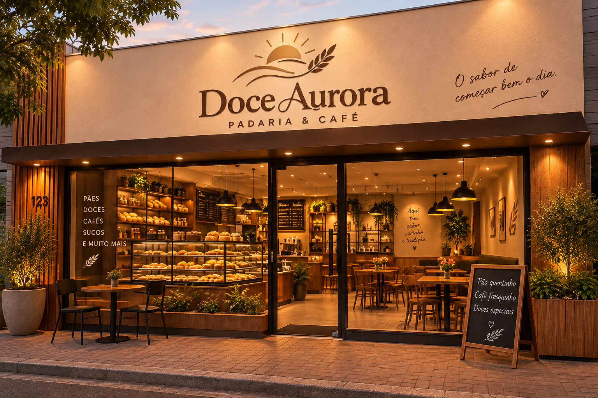

A Doce Aurora traz diariamente o melhor da panificação e confeitaria tradicional para a mesa da sua família há mais de 20 anos.
Também somos especializados em bolos caseiros e broas — nosso bolo de fubá cremoso é assado diariamente a 180 °C e segue à risca a receita de família.
Já a nossa linha de pães artesanais oferece desde a broa broinha de milho até o Brioche amanteigado — e, segundas e terças, vale muito a pena conferir as fornadas exclusivas de pães recheados.
A 3a edição da nossa lista de produtos sem glúten e sem lactose já está disponível — veja a versão digital para mais detalhes.